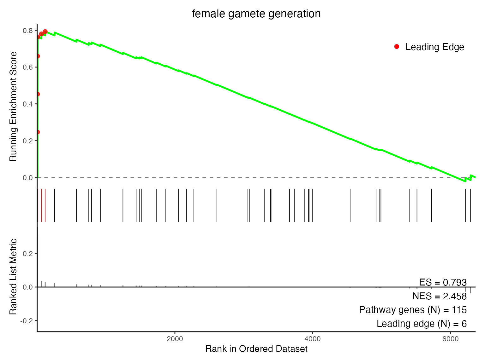
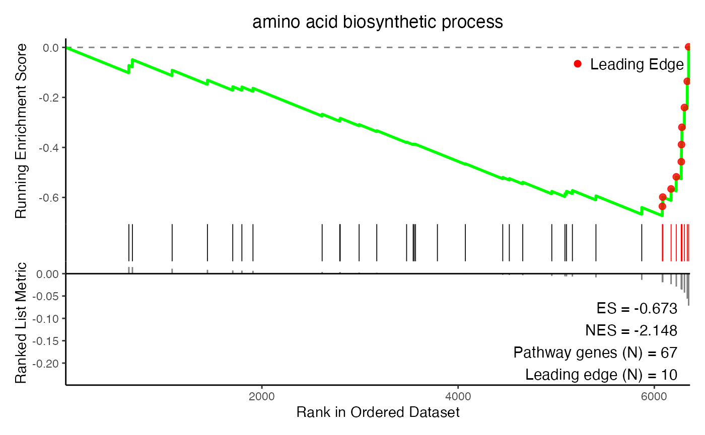
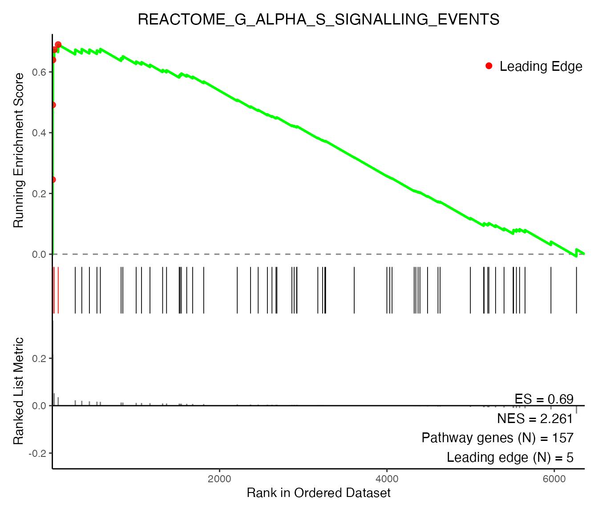

This R package is an in-development resource and is research use only.
The SomaEnrich R package provides tools to perform
standard pathway enrichment analyses, like over-representation analysis
(ORA) and gene set enrichment analysis (GSEA), with SOMAmer®
Reagent-based SomaScan data.
Why create this tool when there are so many pre-existing pathway
analysis resources? The currently available ecosystem of software and R
packages were often designed for (and derived from) transcriptomic data,
and may not be as readily compatible with SomaScan data. SomaScan is a
proteomics technology, and the SomaScan data file (.adat)
is centered around SomaScan assay analytes (SOMAmer Reagents). This
means that SomaScan measurements are representative of SOMAmer Reagent
protein targets, rather than transcribed genes, as they would
in transcriptomic data.
The tools in this package account for SomaScan-specific analysis complexities that stem from this key difference in technologies.
Main Features
The functions in this package can be divided into a few categories:
- Identifier mapping utilities
- map SomaScan analytes to gene identifiers, and vice versa
(
apt2gene()&gene2apt()) - convert entire pathways of genes to SomaScan identifiers
(
genePath2aptPath()andaptPath2genePath())
- map SomaScan analytes to gene identifiers, and vice versa
(
- Data wrangling resources
- convert an
AptName-centricdata.frameinto a gene-centricdata.frame(collapseAptData()) - convert a data frame into a list of vectors, with one list element
per unique group (
df2list())
- convert an
- Enrichment analysis
- prepare SomaScan statistical data for gene-based enrichment analysis
(
prepareRanks()) - perform pre-ranked gene set enrichment analysis (GSEA) using the
fgseaalgorithm (somaPrGSEA()) - perform over-representation analysis (ORA) using a hypergeometric
test (
somaORA())
- prepare SomaScan statistical data for gene-based enrichment analysis
(
- Data visualization tools
- create an enrichment plot from a GSEA results table
(
plotES()) - create a bubble plot from an ORA results table
(
plotBubble())
- create an enrichment plot from a GSEA results table
(
Below is a basic walkthrough illustrating how SomaEnrich functions can be used to perform pre-ranked GSEA, using differential expression results from SomaScan assay data.
A Note on ORA vs. GSEA
Both ORA and GSEA are widely used approaches for pathway enrichment, and both are supported by SomaEnrich. In general:
ORA tests whether a pre-selected set of features (e.g. differentially expressed analytes above some significance or fold-change threshold) overlaps with known pathways more than would be expected by chance. The process is relatively straightforward: define a threshold, identify features that pass it, and run a hypergeometric test. However, ORA requires an arbitrary cutoff to define the feature list. Because of this requirement, ORA can be sensitive to the choice of threshold.
GSEA (in this case, pre-ranked) operates on a ranked list of all measured features, without applying a significance cutoff. Pre-ranked GSEA evaluates whether the members of a given gene set tend to cluster toward the top or bottom of a ranked list.
This vignette primarily focuses on GSEA because it requires more
considerations and pre-processing steps for SomaScan specifically.
Please reference ?somaORA for examples of performing ORA
with SomaScan-derived differential expression data.
Example Workflow
Getting Started
First, we need to load the R packages required for this vignette:
A requirement of pre-ranked GSEA is a numeric vector of statistical results that can be used to rank genes. This workflow assumes that some ranking procedure, like differential expression analysis, has already been performed using data from a pre-processed SomaScan ADAT. Example ADATs can be obtained from the SomaLogic-Data GitHub repository.
For more information about pre-processing your ADAT, please see the SomaDataIO Pre-Processing article.
For an example differential expression workflow (via t-test), please see the SomaDataIO Two-Group Comparison workflow.
A differential expression results data set, called
t_tests, is available as a data object in
SomaEnrich. The t_tests data set will be used
as the starting point for this analysis. t_tests was
created by comparing two groups, males and females, using the
Sex variable from the
SomaEnrich::example_data_11k ADAT. See
?t_tests for more information.
head(t_tests, n = 10)
#> # A tibble: 10 × 12
#> AptName SeqId Target EntrezGeneSymbol UniProt formula t_test
#> <chr> <chr> <chr> <chr> <chr> <list> <list>
#> 1 seq.8468.19 8468… PSA KLK3 P07288 <formula> <htest>
#> 2 seq.6580.29 6580… Pregn… PZP P20742 <formula> <htest>
#> 3 seq.21232.39 2123… BPSA KLK3 P07288 <formula> <htest>
#> 4 seq.7926.13 7926… SPIT3 SPINT3 P49223 <formula> <htest>
#> 5 seq.13699.6 1369… PSA KLK3 P07288 <formula> <htest>
#> 6 seq.4330.4 4330… PSA KLK3 P07288 <formula> <htest>
#> 7 seq.3032.11 3032… FSH CGA|FSHB P01215… <formula> <htest>
#> 8 seq.16892.23 1689… ENPP2 ENPP2 Q13822 <formula> <htest>
#> 9 seq.2953.31 2953… Lutei… CGA|LHB P01215… <formula> <htest>
#> 10 seq.5763.67 5763… HBD-4 DEFB104A Q8WTQ1 <formula> <htest>
#> # ℹ 5 more variables: t_stat <dbl>, p.value <dbl>, fdr <dbl>,
#> # fc <dbl>, log2_fc <dbl>Because Sex was used to compare these groups, a number
of sex-associated proteins are seen at the top of the t-test results,
when sorted by |t_stat|.
Selecting Ranking Metrics
SomaEnrich performs GSEA via the somaPrGSEA() function,
which uses the algorithm from the fgsea
R package under the hood. Like fgsea,
SomaEnrich::somaPrGSEA() requires an input statistic to
rank the features.
Any numeric statistic can be used as a ranking metric, including test statistics, measures of significance (-log10(p-value)), or signed/unsigned metrics measuring association of phenotype to analyte (fold change or log2 fold change). However, because the statistic will be sorted in descending order during calculation of the enrichment score, metrics in which higher values = stronger signal are often used. The best ranking metric depends on your data, experiment, and/or analysis question. See GSEA metrics for ranking genes for more details.
For the purposes of this vignette, we will use the log2_fc as a ranking variable. Please note that this may not be the best metric for your experiment, and is merely used here as an example.
We can create the GSEA input rank vector from the
t_tests object, using the log2_fc column with values
calculated for each analyte:
rank_vec <- t_tests$log2_fc
names(rank_vec) <- t_tests$EntrezGeneSymbol
rank_vec[1:10]
#> KLK3 PZP KLK3 SPINT3 KLK3
#> -0.18770145 0.43998712 -0.27856055 -0.13429816 -0.21372635
#> KLK3 CGA|FSHB ENPP2 CGA|LHB DEFB104A
#> -0.13184144 0.35889179 0.05463412 0.21663722 -0.11179134Gene symbols/identifiers or SomaScan AptNames
may be used as names for the ranking statistic vector. However,
additional steps may be required when using AptNames, and
these will be described in a later section of this vignette.
Resolving Non-1:1 Relationships
You may have noticed that the names of the rank_vec
object above contain duplicate values; for example, KLK3
(Kallikrein-related peptidase 3) is represented more than once in the
first 10 elements of the vector, and CGA (glycoprotein hormones alpha
polypeptide) is represented multiple times in different “|”-delineated
strings. If you are accustomed to working with gene-level data, this
duplication may seem strange. These are instances of non-1:1 mapping
(i.e. one identifier maps to >1 values) between SOMAmer Reagents
(with SeqId identifiers) and canonical protein or gene
target identifiers.
There are a variety of reasons why these entities may not have a 1:1 relationship. In some instances, a SOMAmer Reagent binds a heterodimer protein (or larger heterocomplex), where protein subunits originate from different genes. In other cases, multiple SOMAmer Reagents were developed for the same protein target, or multiple proteoforms have a common gene product identifier.
Take KLK3 as an example:
filter(t_tests, EntrezGeneSymbol == "KLK3") |>
dplyr::select(AptName:UniProt, log2_fc)
#> # A tibble: 4 × 6
#> AptName SeqId Target EntrezGeneSymbol UniProt log2_fc
#> <chr> <chr> <chr> <chr> <chr> <dbl>
#> 1 seq.8468.19 8468-19 PSA KLK3 P07288 -0.188
#> 2 seq.21232.39 21232-39 BPSA KLK3 P07288 -0.279
#> 3 seq.13699.6 13699-6 PSA KLK3 P07288 -0.214
#> 4 seq.4330.4 4330-4 PSA KLK3 P07288 -0.132Multiple SOMAmer Reagents were developed for the KLK3 protein target,
as seen in the table above for KLK3. All SOMAmer Reagents have a unique
SomaScan-specific identifier (SeqId), but in this case
multiple reagents possess the same gene and protein identifiers. This
means that, if we were only to use the “EntrezGeneSymbol” and “log2_fc”
information to make a named input vector to GSEA, we would see duplicate
gene names in the vector.
The GSEA algorithm requires that the input ranking vector be comprised of only unique values. This necessitates an extra pre-processing step to resolve the duplication described here.
Many functions in SomaEnrich select only one assay analyte to represent each gene in enrichment analyses. The ideal method to select this analyte can vary, depending on the ranking metric used; by default, the analyte with the largest |log2_fc| would be selected. This ensures that the measurement from the analyte with the greatest association to the biological feature of interest is retained.
This processing step is handled by the prepareRanks()
function, which is also called under the hood by
somaPrGSEA(). This important step allows proteomic SomaScan
data to be adapted for gene-based analysis workflows. For more
information about this procedure, and for more detailed descriptions of
these non-1:1 relationships, please reference the other package vignette
via browseVignettes("SomaEnrich").
With prepareRanks(), we can create a unique statistical
vector that is suitable for input to GSEA:
prepped_ranks <- prepareRanks(stats = t_tests$log2_fc,
features = t_tests$EntrezGeneSymbol,
split_ids = TRUE, # Default
resolve_multimapping = TRUE, # Default
resolve_method = "abs") # Default
head(prepped_ranks, n = 10)
#> PZP KLK3 SPINT3 CGA FSHB
#> 0.43998712 -0.27856055 -0.13429816 0.35889179 0.35889179
#> ENPP2 LHB DEFB104A CRISP2 CGB3
#> 0.05463412 0.21663722 -0.11179134 -0.06999575 0.29986665
# Only 1 KLK3 value remaining
which(names(prepped_ranks) == "KLK3")
#> [1] 2
# No gene name duplications
any(grepl("\\|", names(prepped_ranks)))
#> [1] FALSEOnly one value is present for gene KLK3, and all heterodimers or
complexes have been split into their constituent parts. The
prepped_ranks vector is ready for pre-ranked GSEA.
As mentioned previously, this same function is called under the hood
in somaPrGSEA(), but prepareRanks() enables
easy access to this processed ranking metric without performing
GSEA, and the output can be used for other gene-based analyses.
Running Pre-Ranked GSEA
To perform GSEA with SomaEnrich, the following inputs are required:
- A named vector of ranking statistics (
rank_vec) with one measurement per gene - Biological networks or gene sets to interrogate for enrichment
Selecting Gene Sets
The SomaEnrich package provides networks from both the Gene Ontology
(GO) and the Molecular Signatures Database (MSigDB). The default network
used in somaPrGSEA() is GO Biological Process (BP). A full
list of available networks and a short description of each collection
can be found via ?somaPrGSEA().
Please note that only one biological network can be selected. Mixing networks and/or subcollections can inflate and distort the null distribution, because the gene sets differ wildly in size, redundancy, and biological intent (A. Subramanian 2005). Additionally, selecting only one collection helps keep processing time down, while also avoiding over-testing as a consequence of performing too many statistical tests on large numbers of gene sets.
Putting it All Together
We will run pre-ranked GSEA with our log2_fc vector, using GO BP for enrichment.
gsea_res <- somaPrGSEA(ranks = prepped_ranks,
resource = "bp")
#> Warning in prepareStats(stats, scoreType, gseaParam): There are ties in the preranked stats (0.49% of the list).
#> The order of those tied genes will be arbitrary, which may produce unexpected results.A few messages will be produced when this function is run interactively:
- When
split_ids = TRUE(the default), heterodimers are split into multiple values, one for each gene/protein in the complex, and this can create ties in the ranked input vector - When
resolve_multimapping = TRUE(the default), duplicate gene measurements will be filtered, selecting one value for retention (in cases of non-1:1 mapping) and other values will be dropped from the ranked input vector (Note: this may be outputted byprepareRanks()in a previous step)
This ensures that the names of the rank_vec are unique,
and that only one measurement per gene is used for GSEA.
The output contains two objects:
- A
data.frameobject containing the results of GSEA, with one row per pathway - A vector of the ranks used as input into GSEA, which may differ from
the input ranks (reference
prepareRanks()for more details)
summary(gsea_res)
#> Length Class Mode
#> results 11 data.frame list
#> final_ranks 6364 -none- numeric
head(gsea_res$final_ranks)
#> PZP KLK3 SPINT3 CGA FSHB
#> 0.43998712 -0.27856055 -0.13429816 0.35889179 0.35889179
#> ENPP2
#> 0.05463412
gsea_res$results |>
dplyr::select(-leadingEdge) |>
head(n = 10)
#> resource_code pathway_id
#> 1 bp GO:0046545
#> 2 bp GO:0007186
#> 3 bp GO:0042742
#> 4 bp GO:0019731
#> 5 bp GO:0007292
#> 6 bp GO:0042698
#> 7 bp GO:0008284
#> 8 bp GO:0001541
#> 9 bp GO:0022602
#> 10 bp GO:0008585
#> pathway pval
#> 1 development of primary female sexual characteristics 1.586104e-05
#> 2 G protein-coupled receptor signaling pathway 2.225441e-05
#> 3 defense response to bacterium 2.668031e-05
#> 4 antibacterial humoral response 5.743648e-05
#> 5 female gamete generation 9.640380e-05
#> 6 ovulation cycle 1.048600e-04
#> 7 positive regulation of cell population proliferation 1.078285e-04
#> 8 ovarian follicle development 1.561967e-04
#> 9 ovulation cycle process 1.585813e-04
#> 10 female gonad development 1.976236e-04
#> padj log2err ES NES starting_set_size
#> 1 0.05389423 0.5756103 0.8001085 2.471181 60
#> 2 0.05389423 0.5756103 0.4941669 1.933540 1337
#> 3 0.05389423 0.5756103 -0.4208543 -1.762107 322
#> 4 0.08701627 0.5573322 -0.6261352 -2.119623 86
#> 5 0.09334868 0.5384341 0.7933356 2.458399 115
#> 6 0.09334868 0.5384341 0.8065727 2.416269 48
#> 7 0.09334868 0.5384341 0.4265924 1.719583 846
#> 8 0.10677810 0.5188481 0.8321372 2.343419 35
#> 9 0.10677810 0.5188481 0.8318502 2.342610 32
#> 10 0.11975989 0.5188481 0.8005251 2.455012 58
#> final_set_size
#> 1 40
#> 2 318
#> 3 196
#> 4 52
#> 5 41
#> 6 34
#> 7 476
#> 8 26
#> 9 26
#> 10 39Descriptions of what each column contains can be found via
?somaPrGSEA(). As expected, some of the top enriched
pathways are sex-related. Column descriptions for pval,
padj, ES, and NES can be found in
?somaPrGSEA().
Let’s take a closer look at the leadingEdge column,
which was removed from the preview above:
filter(gsea_res$results, pathway_id == "GO:0022602") |>
pull(leadingEdge)
#> [[1]]
#> [1] "CGA" "FSHB" "LEP" "ROBO2" "INHBA" "CASP3"The values in leadingEdge are the leading edge genes,
i.e. the core subset of features that account for the observed
enrichment signal in that gene set (see the original
GSEA software documentation for more details about leading edge
analysis). So, in the example above, the leading edge genes were found
to be concentrated toward the top of the rank_vec ranked
list for the pathway GO:0022602
(“ovulation cycle process”).
Remember the sex-associated analytes in the t_tests data
set that were identified earlier in this vignette? Genes associated with
these analytes, like CGA and FSHB, were frequently identified as leading
edge genes.
# Add column indicating if the leading edge subset contain CGA/FSHB
gsea_res$results |>
mutate(cga_fshb_le = grepl("CGA|FSHB", leadingEdge)) |>
select(pathway, leadingEdge, cga_fshb_le) |>
head(n = 10)
#> pathway
#> 1 development of primary female sexual characteristics
#> 2 G protein-coupled receptor signaling pathway
#> 3 defense response to bacterium
#> 4 antibacterial humoral response
#> 5 female gamete generation
#> 6 ovulation cycle
#> 7 positive regulation of cell population proliferation
#> 8 ovarian follicle development
#> 9 ovulation cycle process
#> 10 female gonad development
#> leadingEdge
#> 1 CGA, FSHB, LHB, LEP, ROBO2, INHBA, CASP3
#> 2 CGA, FSHB, CGB3, CGB7, LHB, C3, NPPB, GCG, APLP1, CXCL11, PLA2G2A, HOMER2, IAPP, ITGB3, JAK2, TREM2, NTS, SCG5, GHRL, CCL14, SPHK1, NMB, ROCK2, CCL22, ADGRB1, WNK1, OXSR1, TM2D1, PTH, PPP1R9B, PENK, STAT5A, ROBO1, GIPC1, GAP43, CXCL10, AKT1, NMT2, AGT, PDGFRB, CX3CL1, GIP, AHCYL1, EDN2, KLK5, NMT1, AREG, PRKAR1B, SST, CXCL17, SCT, CXCL13, SNCA, LTB4R, CXCL12, RGS18, PROK2, PPP3CA, KISS1, PTPN6, CXCL1, CCL15, PRKCA, F2, ECE1, NPPA, SORCS1
#> 3 KLK3, DEFB104A, IGHD, DEFB4A, HAMP, LACRT, IGHE, ANG, BPI, PI3, H2BC21, RPL30, S100A9, CAMP, H2BC12, DEFA1, DEFA3, TREM1, STATH, PGLYRP1, LCN2, ARG2, FGR, PGLYRP3, HAVCR2, ADAM17, MICA, CHGA, SERPINE1, TAC1, RNASE3, MAP3K7, CFP, SELP, IL18R1, KLK7, HLA-E, REG3G, IGHA2, IGHA1, HTN1, DEFB136, SFTPD, S100A8
#> 4 KLK3, IGHD, IGHE, ANG, BPI, PI3, H2BC21, CAMP, H2BC12, DEFA1, DEFA3
#> 5 FSHB, CGB3, CGB7, LEP, IL12B, PTN
#> 6 CGA, FSHB, LEP, PTN, ROBO2, INHBA, CASP3
#> 7 FCGR3A, CGA, FSHB, LEP, FOXJ2, IGF2, FGF19, FER, IL12B, ITGAV, ITGB3, LTA, PTN, JAK2, AGER, FOLR2, TNFAIP3, GHRL, EMC10, CCL14, REG1B, SPHK1, XBP1, CSF1R, NMB, KDM4C, FGF16, PDPK1, GDF2, FGF6, TIRAP, CD28, CTNNB1, CD80, PIK3CA, PIK3R1, FN1, STAT5A, GAS6, PDCL3, IGFBP2, TGM1, CXCL10, AKT1, CD40LG, MMP12, AGT, PDGFRB, CX3CL1, CXCL5, REG3A, FBLN1, EPHB2, EDN2, IL23A, MYC, FCRL3, FGFR4, AREG, HCLS1, AGGF1, JAML, IL12RB1, PDGFD, PRDX3, NRG1, THBS4, GREM1, FGF7, NTF3, IL2RB, CXCL12, LAMC2, GFAP, HTN3, PPP3CA, PTPN6, ERBB3, PRKCA, CNTFR, IFNG, NLGN2, IGF1, LILRB2, CSF2RB, VEGFA, VIP, IL11RA, DHX9, FLNA, SMARCC1, CD209, XCL1, IL7, SIRPG, LEPR, IL6R, GRN, PTEN, TNFSF9, IL10RA, SHH, FZD9
#> 8 CGA, FSHB, LHB
#> 9 CGA, FSHB, LEP, ROBO2, INHBA, CASP3
#> 10 CGA, FSHB, LHB, LEP, ROBO2, INHBA, CASP3
#> cga_fshb_le
#> 1 TRUE
#> 2 TRUE
#> 3 FALSE
#> 4 FALSE
#> 5 TRUE
#> 6 TRUE
#> 7 TRUE
#> 8 TRUE
#> 9 TRUE
#> 10 TRUEThese sex-associated genes drive a large portion of the enrichment identified in each of these gene sets.
Next, let’s look at the set size columns:
select(gsea_res$results, pathway, contains("size")) |>
head()
#> pathway
#> 1 development of primary female sexual characteristics
#> 2 G protein-coupled receptor signaling pathway
#> 3 defense response to bacterium
#> 4 antibacterial humoral response
#> 5 female gamete generation
#> 6 ovulation cycle
#> starting_set_size final_set_size
#> 1 60 40
#> 2 1337 318
#> 3 322 196
#> 4 86 52
#> 5 115 41
#> 6 48 34These columns illustrate how many genes in each gene set were
filtered from the set, prior to running GSEA. This is a
standard pre-processing step for GSEA; genes present in each gene set
that are not found in the ranks vector are removed prior to
enrichment. This can have a small or large impact on the set size,
depending on the content of the set.
AptNames Instead of Gene IDs
As mentioned in the previous section, GSEA can be run using SomaScan
AptNames rather than gene IDs, if desired. To do so, the
vector provided to ranks must be named with
AptNames:
apt_vec <- t_tests$log2_fc
names(apt_vec) <- t_tests$AptName
head(apt_vec)
#> seq.8468.19 seq.6580.29 seq.21232.39 seq.7926.13 seq.13699.6
#> -0.1877014 0.4399871 -0.2785606 -0.1342982 -0.2137264
#> seq.4330.4
#> -0.1318414Note that SeqIds are not accepted as vector
names - the R-compatible AptName format
(seq.1234.56) must be used. If starting from
SeqIds, the SomaDataIO::seqid2apt() function
can be used to convert between the two formats. See
?SomaDataIO::seqid2apt() for more details.
Additionally, the column metadata from a soma_adat
object will be required as input. The information in the metadata will
be used to map genes from GO and MSigDB to SomaScan assay identifiers
.
The column metadata can be extracted from a soma_adat
using SomaDataIO::getAnalyteInfo():
col_meta <- SomaDataIO::getAnalyteInfo(example_data_11k)
head(col_meta)
#> # A tibble: 6 × 26
#> AptName SeqId SeqIdVersion SomaId TargetFullName Target UniProt
#> <chr> <chr> <dbl> <chr> <chr> <chr> <chr>
#> 1 seq.10000.28 10000… 3 SL019… Beta-crystall… CRBB2 P43320
#> 2 seq.10001.7 10001… 3 SL002… RAF proto-onc… c-Raf P04049
#> 3 seq.10003.15 10003… 3 SL019… Zinc finger p… ZNF41 P51814
#> 4 seq.10006.25 10006… 3 SL019… ETS domain-co… ELK1 P19419
#> 5 seq.10008.43 10008… 3 SL019… Guanylyl cycl… GUC1A P43080
#> 6 seq.10010.10 10010… 3 SL014… Beclin-1 BECN1 Q14457
#> # ℹ 19 more variables: EntrezGeneID <chr>, EntrezGeneSymbol <chr>,
#> # Organism <chr>, Units <chr>, Type <chr>, Dilution <chr>,
#> # PlateScale_Reference <dbl>, CalReference <dbl>,
#> # Cal_SS.000005_Set001 <dbl>, ColCheck <chr>,
#> # CalQcRatio_SS.000005_Set001_200170 <dbl>,
#> # QcReference_200170 <dbl>, Cal_SS.000005_Set002 <dbl>,
#> # CalQcRatio_SS.000005_Set002_200170 <dbl>, …When running somaPrGSEA() with AptNames, is
it important to set use_aptnames = TRUE and
provide a data frame of column meta data to col_meta_df.
This will produce a progress bar that tracks the conversion of GO BP
terms from their original gene identifiers to SomaScan
AptNames, so gene set enrichment can be performed in
aptamer space (i.e. using AptNames in the ranking vector
and AptName-containing pathways).
Once all gene sets have been converted to AptNames, GSEA
will be performed using the ranked AptNames.
gsea_res_apt <- somaPrGSEA(ranks = apt_vec,
col_meta_df = col_meta, # Required
use_aptnames = TRUE) # Required)
#> Warning in prepareStats(stats, scoreType, gseaParam): There are ties in the preranked stats (0.03% of the list).
#> The order of those tied genes will be arbitrary, which may produce unexpected results.
gsea_res_apt$results |>
dplyr::select(resource_code:NES) |>
slice_head(n = 20)
#> resource_code pathway_id
#> 1 bp GO:0019731
#> 2 bp GO:0002784
#> 3 bp GO:0002225
#> 4 bp GO:0016485
#> 5 bp GO:0042742
#> 6 bp GO:0031638
#> 7 bp GO:0002760
#> 8 bp GO:0002786
#> 9 bp GO:0002759
#> 10 bp GO:0002775
#> 11 bp GO:0002778
#> 12 bp GO:0042699
#> 13 bp GO:0008585
#> 14 bp GO:1900426
#> 15 bp GO:0019216
#> 16 bp GO:0019730
#> 17 bp GO:0046545
#> 18 bp GO:0009617
#> 19 bp GO:0003073
#> 20 bp GO:0046660
#> pathway
#> 1 antibacterial humoral response
#> 2 regulation of antimicrobial peptide production
#> 3 positive regulation of antimicrobial peptide production
#> 4 protein processing
#> 5 defense response to bacterium
#> 6 zymogen activation
#> 7 positive regulation of antimicrobial humoral response
#> 8 regulation of antibacterial peptide production
#> 9 regulation of antimicrobial humoral response
#> 10 antimicrobial peptide production
#> 11 antibacterial peptide production
#> 12 follicle-stimulating hormone signaling pathway
#> 13 female gonad development
#> 14 positive regulation of defense response to bacterium
#> 15 regulation of lipid metabolic process
#> 16 antimicrobial humoral response
#> 17 development of primary female sexual characteristics
#> 18 response to bacterium
#> 19 regulation of systemic arterial blood pressure
#> 20 female sex differentiation
#> pval padj log2err ES NES
#> 1 1.052977e-08 2.947945e-05 0.7477397 -0.7349885 -2.603962
#> 2 1.460882e-08 2.947945e-05 0.7477397 -0.9673343 -2.254307
#> 3 1.802601e-08 2.947945e-05 0.7337620 -0.9757868 -2.221697
#> 4 2.029998e-08 2.947945e-05 0.7337620 -0.5345372 -2.195509
#> 5 2.210185e-08 2.947945e-05 0.7337620 -0.4734141 -2.015667
#> 6 7.483225e-08 8.317604e-05 0.7049757 -0.7286306 -2.520386
#> 7 1.110022e-07 1.011280e-04 0.7049757 -0.9468849 -2.267047
#> 8 1.213111e-07 1.011280e-04 0.6901325 -0.9909897 -1.925841
#> 9 1.199175e-06 8.885889e-04 0.6435518 -0.9389019 -2.280747
#> 10 8.405233e-06 5.293281e-03 0.5933255 -0.9205340 -2.363617
#> 11 9.524573e-06 5.293281e-03 0.5933255 -0.9419308 -2.144613
#> 12 9.257055e-06 5.293281e-03 0.5933255 0.9856602 1.940181
#> 13 1.370089e-05 6.792679e-03 0.5933255 0.7702390 2.415807
#> 14 1.629672e-05 6.792679e-03 0.5756103 -0.9251532 -2.156007
#> 15 1.565678e-05 6.792679e-03 0.5756103 0.5583672 2.049592
#> 16 1.454155e-05 6.792679e-03 0.5933255 -0.4610553 -1.896939
#> 17 2.299590e-05 8.592634e-03 0.5756103 0.7699026 2.425375
#> 18 2.319200e-05 8.592634e-03 0.5756103 -0.3465975 -1.577471
#> 19 2.635056e-05 9.249047e-03 0.5756103 -0.6803609 -2.295483
#> 20 3.464807e-05 1.155340e-02 0.5573322 0.7565999 2.410970Because GSEA was performed in aptamer space, the
leadingEdge column contains leading edge
analytes, rather than genes.
gsea_res_apt$results |>
pull(leadingEdge) |>
head(n = 5)
#> [[1]]
#> [1] "seq.21232.39" "seq.13699.6" "seq.8468.19" "seq.4330.4"
#> [5] "seq.4916.2" "seq.4135.84" "seq.4874.3" "seq.4126.22"
#> [9] "seq.4982.54" "seq.22974.25" "seq.9384.17" "seq.22403.13"
#> [13] "seq.9250.87" "seq.14143.8" "seq.20539.4" "seq.15481.45"
#>
#> [[2]]
#> [1] "seq.21232.39" "seq.13699.6" "seq.8468.19" "seq.4330.4"
#>
#> [[3]]
#> [1] "seq.21232.39" "seq.13699.6" "seq.8468.19" "seq.4330.4"
#>
#> [[4]]
#> [1] "seq.21232.39" "seq.13699.6" "seq.8468.19" "seq.4330.4"
#> [5] "seq.3396.54" "seq.25446.34" "seq.18864.7" "seq.5015.15"
#> [9] "seq.2212.69" "seq.14273.19" "seq.7994.41" "seq.8465.52"
#> [13] "seq.3348.49" "seq.10895.28" "seq.6368.9" "seq.19251.56"
#> [17] "seq.8882.1" "seq.14123.34" "seq.3474.19" "seq.4931.59"
#> [21] "seq.4534.10" "seq.21387.64" "seq.21436.56" "seq.15513.108"
#> [25] "seq.2925.9" "seq.5722.78" "seq.25947.116" "seq.9416.77"
#> [29] "seq.21733.11" "seq.7768.10" "seq.11531.24" "seq.24907.3"
#> [33] "seq.4459.68"
#>
#> [[5]]
#> [1] "seq.21232.39" "seq.13699.6" "seq.8468.19" "seq.4330.4"
#> [5] "seq.5763.67" "seq.4916.2" "seq.13397.88" "seq.3504.58"
#> [9] "seq.7163.26" "seq.4135.84" "seq.4874.3" "seq.4126.22"
#> [13] "seq.4982.54" "seq.22974.25" "seq.12478.15" "seq.5339.49"
#> [17] "seq.9384.17" "seq.22403.13" "seq.9250.87" "seq.14143.8"
#> [21] "seq.20539.4" "seq.9266.1" "seq.15481.45" "seq.17172.19"
#> [25] "seq.3329.14" "seq.2836.68" "seq.17752.24" "seq.3810.50"
#> [29] "seq.10561.5" "seq.7152.5" "seq.8882.1" "seq.2730.58"
#> [33] "seq.11184.51" "seq.2925.9" "seq.9337.43" "seq.8476.11"
#> [37] "seq.5741.55" "seq.5259.2" "seq.2960.66" "seq.4154.57"
#> [41] "seq.14079.14" "seq.3378.49" "seq.25918.60" "seq.15476.6"
#> [45] "seq.11089.7" "seq.10608.9" "seq.9332.6" "seq.4414.69"
#> [49] "seq.17145.1" "seq.24217.2" "seq.11378.37"Visualizing Results
SomaEnrich has a few built-in functions for visualizing
ORA and GSEA results. plotES() will create a plot of the
enrichment score for any gene set, using the results of
somaPrGSEA(). The plot is very similar to that produced by
the Broad’s original GSEA software, with the option to annotate the
leading edge genes on the enrichment score line.
Only one gene set can be plotted at a time. Let’s use the same example gene set as the previous section, “ovulation cycle”:
plotES("female gamete generation",
gsea_results = gsea_res,
show_leading_edge = TRUE)
The dots annotated on the line at the top of the plot represent each of the leading edge genes in the gene set. When the NES value is positive, the leading edge genes are found at the left of the plot. However, if the NES was negative, we’d see these genes on the right side of the plot, after the apex of the enrichment line.
plotES("amino acid biosynthetic process",
gsea_results = gsea_res,
show_leading_edge = TRUE)
Using Custom Gene Sets
If you want to use a biological network that is not already available in SomaEnrich, you will need to:
- Read in the network from a GMT file or other resource
- Create a named list containing the new gene sets/pathways of interest
The output of the steps above can be provided to the
cust_paths argument of somaPrGSEA() or
somaORA(). This section of the vignette will describe how
to do both steps above.
GMT Files
A GMT file can easily be read in and provided to
somaPrGSEA() using tools from the fgsea
package.
The fgsea::gmtPathways() function allows the user to
read the contents of any GMT file into R as a named list, with each list
item corresponding to a pathway from the GMT file. The example GMT file
in SomaEnrich can be used to illustrate this:
gmt_file <- system.file("extdata", "msigdb_c2_reactome.gmt",
package = "SomaEnrich")
gmt_list <- fgsea::gmtPathways(gmt_file)
head(gmt_list)
#> $REACTOME_2_LTR_CIRCLE_FORMATION
#> [1] "BANF1" "HMGA1" "LIG4" "PSIP1" "XRCC4" "XRCC5" "XRCC6"
#>
#> $REACTOME_ABACAVIR_ADME
#> [1] "ABCB1" "ABCG2" "ADH1A" "MAPDA" "NT5C2" "PCK1"
#> [7] "SLC22A1" "SLC22A2" "SLC22A3"
#>
#> $REACTOME_ABACAVIR_TRANSMEMBRANE_TRANSPORT
#> [1] "ABCB1" "ABCG2" "SLC22A1" "SLC22A2" "SLC22A3"
#>
#> $REACTOME_ABC_FAMILY_PROTEINS_MEDIATED_TRANSPORT
#> [1] "ABCA10" "ABCA12" "ABCA2" "ABCA3" "ABCA4" "ABCA5" "ABCA6"
#> [8] "ABCA7" "ABCA8" "ABCA9" "ABCB1" "ABCB10" "ABCB4" "ABCB5"
#> [15] "ABCB6" "ABCB7" "ABCB8" "ABCB9" "ABCC1" "ABCC10" "ABCC11"
#> [22] "ABCC2" "ABCC3" "ABCC4" "ABCC5" "ABCC6" "ABCC9" "ABCD1"
#> [29] "ABCD2" "ABCD3" "ABCF1" "ABCG1" "ABCG4" "ABCG5" "ABCG8"
#> [36] "ADRM1" "APOA1" "CFTR" "DERL1" "DERL2" "DERL3" "EIF2S1"
#> [43] "EIF2S2" "EIF2S3" "ERLEC1" "ERLIN1" "ERLIN2" "KCNJ11" "OS9"
#> [50] "PEX19" "PEX3" "PSMA1" "PSMA2" "PSMA3" "PSMA4" "PSMA5"
#> [57] "PSMA6" "PSMA7" "PSMB1" "PSMB2" "PSMB3" "PSMB4" "PSMB5"
#> [64] "PSMB6" "PSMB7" "PSMC1" "PSMC2" "PSMC3" "PSMC4" "PSMC5"
#> [71] "PSMC6" "PSMD1" "PSMD11" "PSMD12" "PSMD13" "PSMD14" "PSMD2"
#> [78] "PSMD3" "PSMD6" "PSMD7" "PSMD8" "RNF185" "RNF5" "RPS27A"
#> [85] "SEL1L" "SEM1" "UBA52" "UBB" "UBC" "VCP"
#>
#> $REACTOME_ABC_TRANSPORTERS_IN_LIPID_HOMEOSTASIS
#> [1] "ABCA10" "ABCA12" "ABCA2" "ABCA3" "ABCA5" "ABCA6" "ABCA7"
#> [8] "ABCA9" "ABCD1" "ABCD2" "ABCD3" "ABCG1" "ABCG4" "ABCG5"
#> [15] "ABCG8" "APOA1" "PEX19" "PEX3"
#>
#> $REACTOME_ABC_TRANSPORTER_DISORDERS
#> [1] "ABCA1" "ABCA12" "ABCA3" "ABCB11" "ABCB4" "ABCB6" "ABCC2"
#> [8] "ABCC6" "ABCC8" "ABCC9" "ABCD1" "ABCD4" "ABCG5" "ABCG8"
#> [15] "ADRM1" "APOA1" "CFTR" "DERL1" "DERL2" "DERL3" "ERLEC1"
#> [22] "ERLIN1" "ERLIN2" "KCNJ11" "LMBRD1" "OS9" "PSMA1" "PSMA2"
#> [29] "PSMA3" "PSMA4" "PSMA5" "PSMA6" "PSMA7" "PSMB1" "PSMB2"
#> [36] "PSMB3" "PSMB4" "PSMB5" "PSMB6" "PSMB7" "PSMC1" "PSMC2"
#> [43] "PSMC3" "PSMC4" "PSMC5" "PSMC6" "PSMD1" "PSMD11" "PSMD12"
#> [50] "PSMD13" "PSMD14" "PSMD2" "PSMD3" "PSMD6" "PSMD7" "PSMD8"
#> [57] "RNF185" "RNF5" "RPS27A" "SEL1L" "SEM1" "UBA52" "UBB"
#> [64] "UBC" "VCP"This list can be directly provided as-is to
somaPrGSEA():
gsea_cust <- somaPrGSEA(ranks = rank_vec,
cust_paths = gmt_list)
#> Warning in prepareStats(stats, scoreType, gseaParam): There are ties in the preranked stats (0.49% of the list).
#> The order of those tied genes will be arbitrary, which may produce unexpected results.
head(gsea_cust$results, n = 10)
#> resource_code pathway_id
#> 1 custom M13070
#> 2 custom M567
#> 3 custom M4904
#> 4 custom M27211
#> 5 custom M8240
#> 6 custom M27546
#> 7 custom M45019
#> 8 custom M557
#> 9 custom M507
#> 10 custom M10320
#> pathway
#> 1 REACTOME_HORMONE_LIGAND_BINDING_RECEPTORS
#> 2 REACTOME_SRP_DEPENDENT_COTRANSLATIONAL_PROTEIN_TARGETING_TO_MEMBRANE
#> 3 REACTOME_G_ALPHA_S_SIGNALLING_EVENTS
#> 4 REACTOME_PEPTIDE_HORMONE_METABOLISM
#> 5 REACTOME_IMMUNOREGULATORY_INTERACTIONS_BETWEEN_A_LYMPHOID_AND_A_NON_LYMPHOID_CELL
#> 6 REACTOME_DISEASES_OF_CARBOHYDRATE_METABOLISM
#> 7 REACTOME_SARS_COV_2_MODULATES_HOST_TRANSLATION_MACHINERY
#> 8 REACTOME_DEFENSINS
#> 9 REACTOME_GPCR_LIGAND_BINDING
#> 10 REACTOME_BIOLOGICAL_OXIDATIONS
#> pval padj log2err ES NES
#> 1 1.294696e-05 0.01881194 0.5933255 0.9701575 2.081867
#> 2 8.556062e-05 0.06215979 0.5384341 -0.6946538 -2.096187
#> 3 6.174818e-04 0.15789504 0.4772708 0.6900408 2.261272
#> 4 1.068498e-03 0.15789504 0.4550599 0.7047331 2.215921
#> 5 3.649598e-04 0.15789504 0.4984931 0.6037677 2.111367
#> 6 8.116391e-04 0.15789504 0.4772708 -0.7375891 -2.029185
#> 7 9.578767e-04 0.15789504 0.4772708 -0.7309962 -2.011048
#> 8 1.086683e-03 0.15789504 0.4550599 -0.6396294 -1.930145
#> 9 1.019368e-03 0.15789504 0.4550599 0.5222815 1.889872
#> 10 6.979579e-04 0.15789504 0.4772708 -0.4402549 -1.739349
#> leadingEdge
#> 1 CGA, FSHB, LHB
#> 2 RPL30, RPS7, RPS25, RPL12, RPS27A, RPS3, SRP14, SRP19, RPS5, RPN1, RPS19, RPS10, RPS14, RPL5, RPS3A, RPL11
#> 3 CGA, FSHB, LHB, GCG, IAPP
#> 4 CGA, FSHB, CGB3, LHB, LEP, GCG, GHRL, SLC30A5, INHBA, CTNNB1, STX1A, AGT, GIP
#> 5 FCGR3A, PILRA, C3, FCGR2B, COLEC12, CD300LG, LILRA2, LILRB3, TREM2, CD226, KLRB1, SIGLEC12, LILRB1, CD33, ICAM5, CD40LG, LAIR2, PIANP, B2M, JAML, TREML2, CD34, KIR2DL2, CD8A, CD8B, LILRB2, CRTAM, CD1B, NCR1, ITGAL, ITGB2
#> 6 GUSB, DCXR, GLB1, LCT, SGSH, ALDOB, UBB, RPS27A, GNS, UBC
#> 7 SMN1, RPS7, RPS25, RPS27A, RPS3, SNRPG, RPS5, RPS19, RPS10, RPS14, RPS3A, SNRPF, GEMIN7
#> 8 DEFB104A, DEFB4A, PRSS3, DEFA1, DEFA3, PRSS2
#> 9 CGA, FSHB, LHB, C3, GCG, CXCL11, CXCL2, KNG1, CXCL3, IAPP, NTS, GHRL, NMB, CCL22, PTH, PENK, CXCL10, AGT, CX3CL1, CXCL5, GIP, EDN2, SST, SCT, CXCL13, LTB4R, CXCL12, PROK2, KISS1, CXCL1, F2, ECE1
#> 10 ACY1, AKR7A3, ADH1C, MAT1A, ALDH1A1, AOC1, POMC, SULT2A1, ADH4, ALDH2, UGDH, UGT2B15, GSTM4, GSTM1, CYP3A4, TPST1, NQO2, UXS1, POR, ADH1B, CES1, ESD, AKR7A2, SULT4A1, CYP2C19, TPMT, NAT1, ACSS2, GSS, N6AMT1, TRMT112, ADH1A, DPEP1, CES3, TBXAS1, MAT2A, CBR3, AS3MT
#> starting_set_size final_set_size
#> 1 12 9
#> 2 113 30
#> 3 157 63
#> 4 88 51
#> 5 191 112
#> 6 34 21
#> 7 51 21
#> 8 53 30
#> 9 463 153
#> 10 221 106These pathways can be visualized with the same functions as the
built-in GO and MSigDB resources. However, when using custom pathways,
the gmt_list object must be provided to the
cust_path argument:
plotES("REACTOME_G_ALPHA_S_SIGNALLING_EVENTS",
gsea_res = gsea_cust,
cust_path = gmt_list,
show_leading_edge = TRUE)
KEGG pathways
Currently, only GO and MSigDB networks are available in SomaEnrich.
However, other networks, like KEGG, that are not provided by SomaEnrich
can still be used as input to SomaEnrich::somaPrGSEA().
There are a number of tools available to work with KEGG data in R; the
example below will describe how to use pathway analysis functions from
the limma R package to retrieve KEGG pathway
information.
# Retrieve full list of available human KEGG pathways
kegg_content <- limma::getGeneKEGGLinks("hsa")
head(kegg_content)
#> GeneID PathwayID
#> 1 10327 hsa00010
#> 2 124 hsa00010
#> 3 125 hsa00010
#> 4 126 hsa00010
#> 5 127 hsa00010
#> 6 128 hsa00010This data frame must be converted to a list object for input into
somaPrGSEA():
kegg_list <- df2list(kegg_content,
name_col = "PathwayID",
value_col = "GeneID")
length(kegg_list)
#> [1] 372
head(kegg_list)
#> $hsa00010
#> [1] "10327" "124" "125" "126" "127" "128" "130"
#> [8] "130589" "131" "160287" "1737" "1738" "2023" "2026"
#> [15] "2027" "217" "218" "219" "2203" "221" "222"
#> [22] "223" "224" "226" "229" "230" "2538" "2597"
#> [29] "26330" "2645" "2821" "3098" "3099" "3101" "387712"
#> [36] "3939" "3945" "3948" "441531" "501" "5105" "5106"
#> [43] "5160" "5161" "5162" "5211" "5213" "5214" "5223"
#> [50] "5224" "5230" "5232" "5236" "5313" "5315" "55276"
#> [57] "55902" "57818" "669" "7167" "80201" "83440" "84532"
#> [64] "8789" "92483" "92579" "9562"
#>
#> $hsa00020
#> [1] "1431" "1737" "1738" "1743" "2271" "3417" "3418" "3419"
#> [9] "3420" "3421" "4190" "4191" "47" "48" "4967" "50"
#> [17] "5091" "5105" "5106" "5160" "5161" "5162" "55753" "6389"
#> [25] "6390" "6391" "6392" "8801" "8802" "8803"
#>
#> $hsa00030
#> [1] "132158" "2203" "221823" "226" "229" "22934" "230"
#> [8] "23729" "2539" "25796" "2821" "414328" "51071" "5211"
#> [15] "5213" "5214" "5226" "5236" "55276" "5631" "5634"
#> [22] "6120" "64080" "6888" "7086" "729020" "8277" "84076"
#> [29] "8789" "9104" "9563"
#>
#> $hsa00040
#> [1] "10327" "10720" "10941" "231" "27294" "28970" "2990"
#> [8] "441282" "51084" "51181" "54490" "54575" "54576" "54577"
#> [15] "54578" "54579" "54600" "54657" "54658" "54659" "55277"
#> [22] "57016" "574537" "6120" "6652" "729020" "729920" "7358"
#> [29] "7360" "7363" "7364" "7365" "7366" "7367" "79799"
#> [36] "9365" "9942"
#>
#> $hsa00051
#> [1] "197258" "2203" "226" "229" "230" "231" "26007"
#> [8] "2762" "282969" "29925" "29926" "3098" "3099" "3101"
#> [15] "3795" "4351" "441282" "51171" "5207" "5208" "5209"
#> [22] "5210" "5211" "5213" "5214" "5372" "5373" "55556"
#> [29] "57016" "57103" "6652" "7167" "7264" "80201" "8789"
#> [36] "8790"
#>
#> $hsa00052
#> [1] "130589" "231" "2538" "2548" "2582" "2584" "2592"
#> [8] "2595" "2645" "2683" "2717" "2720" "3098" "3099"
#> [15] "3101" "3906" "3938" "441282" "5211" "5213" "5214"
#> [22] "5236" "55276" "57016" "57818" "6476" "7360" "80201"
#> [29] "8704" "8972" "92579" "93432"From this point, the kegg_list object can be provided to
somaPrGSEA() using the cust_path argument, as
shown previously.
Session Info
sessionInfo()
#> R version 4.6.1 (2026-06-24)
#> Platform: aarch64-apple-darwin23
#> Running under: macOS Sonoma 14.8.7
#>
#> Matrix products: default
#> BLAS: /Library/Frameworks/R.framework/Versions/4.6/Resources/lib/libRblas.0.dylib
#> LAPACK: /Library/Frameworks/R.framework/Versions/4.6/Resources/lib/libRlapack.dylib; LAPACK version 3.12.1
#>
#> locale:
#> [1] en_US.UTF-8/en_US.UTF-8/en_US.UTF-8/C/en_US.UTF-8/en_US.UTF-8
#>
#> time zone: UTC
#> tzcode source: internal
#>
#> attached base packages:
#> [1] stats graphics grDevices utils datasets methods
#> [7] base
#>
#> other attached packages:
#> [1] limma_3.68.5 fgsea_1.38.0 dplyr_1.2.1 SomaDataIO_6.6.1
#> [5] SomaEnrich_0.1.0
#>
#> loaded via a namespace (and not attached):
#> [1] utf8_1.2.6 sass_0.4.10 generics_0.1.4
#> [4] tidyr_1.3.2 stringi_1.8.9 lattice_0.22-9
#> [7] digest_0.6.39 magrittr_2.0.5 evaluate_1.0.5
#> [10] grid_4.6.1 RColorBrewer_1.1-3 fastmap_1.2.0
#> [13] cellranger_1.1.0 jsonlite_2.0.0 Matrix_1.7-5
#> [16] purrr_1.2.2 scales_1.4.0 codetools_0.2-20
#> [19] textshaping_1.0.5 jquerylib_0.1.4 cli_3.6.6
#> [22] rlang_1.3.0 cowplot_1.2.0 withr_3.0.3
#> [25] cachem_1.1.0 yaml_2.3.12 otel_0.2.0
#> [28] tools_4.6.1 parallel_4.6.1 BiocParallel_1.46.0
#> [31] ggplot2_4.0.3 fastmatch_1.1-8 vctrs_0.7.3
#> [34] R6_2.6.1 lifecycle_1.0.5 stringr_1.6.0
#> [37] fs_2.1.0 ragg_1.5.2 pkgconfig_2.0.3
#> [40] desc_1.4.3 pkgdown_2.2.1 pillar_1.11.1
#> [43] bslib_0.12.0 gtable_0.3.6 glue_1.8.1
#> [46] data.table_1.18.6.1 Rcpp_1.1.2 statmod_1.5.2
#> [49] systemfonts_1.3.2 xfun_0.60 tibble_3.3.1
#> [52] tidyselect_1.2.1 knitr_1.51 farver_2.1.2
#> [55] patchwork_1.3.2 htmltools_0.5.9 labeling_0.4.3
#> [58] rmarkdown_2.31 compiler_4.6.1 S7_0.2.2
#> [61] readxl_1.5.0